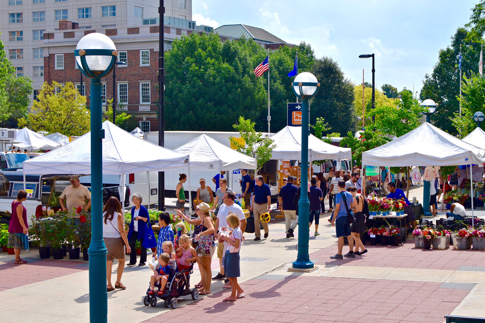

Welcome to Madison Events
Welcome to Madison Events! After moving to Madison, I realized that it can sometimes be difficult to find local events and fun things to do. I created this website to bring together different events, activities, and interesting places around Madison. It is especially useful for families with young children, friends looking for activities to enjoy together, and people who want to meet new people and explore the city.
Get StartedEvents
Family-Friendly Events
Find fun activities and events for families with young children in Madison. This section includes library programs, kids activities, seasonal events, and other family-friendly things to do.
Local Festivals and Markets
Discover local festivals, farmers markets, and community events around Madison. These are great places to shop, enjoy local food, and spend time with family and friends.
Meet New People
Find social events and group activities where you can meet new people, make friends, and connect with the Madison community.
Upcoming Events
Stay updated on events happening soon around Madison. This section highlights new and upcoming activities, festivals, and community events.

Outdoor Activities
Explore lakes, parks, hiking trails, biking paths, and other outdoor places around Madison. Find fun places to visit and enjoy nature with family and friends.
Food and Restaurants
Discover restaurants, cafes, and newly opened food spots around Madison. Read reviews and find new places to eat with family and friends.